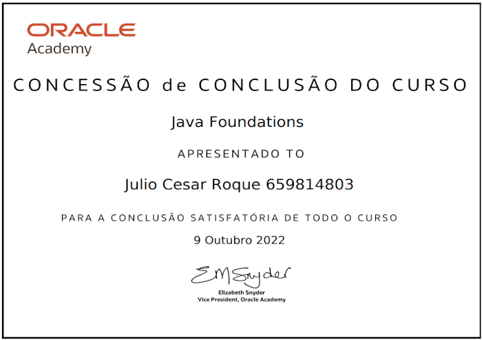
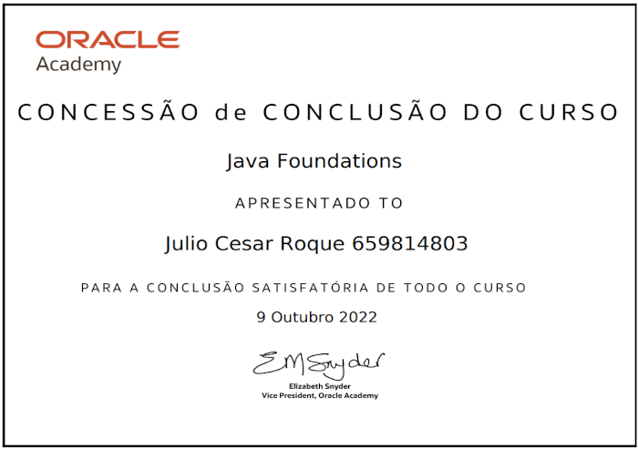

Educação e Formação
Ensino Fundamental Escola Municipal Jose Neves Teixeira, Guanambi. BA, (2014 - 2017)
Ensino Medio Técnico: técnico em Serviços Jurídicos Centro Estadual de Educação Profissional em Saúde , Guanambi, BA, (2018 - 2021)
Graduação de Analise e Desenvolvimento de Sistema: Técnologia Centro Universitário FG - UNIFG, Guanambi, BA, Esperado em Junho 2024 Curso de Analise e Desenvolvimento de Sistemas em andamento, atualmente no 4º semestre.
Cursos/Certificados


 
